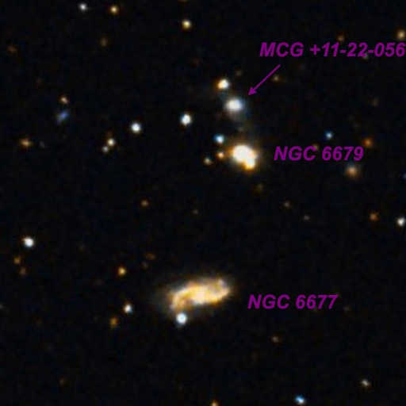
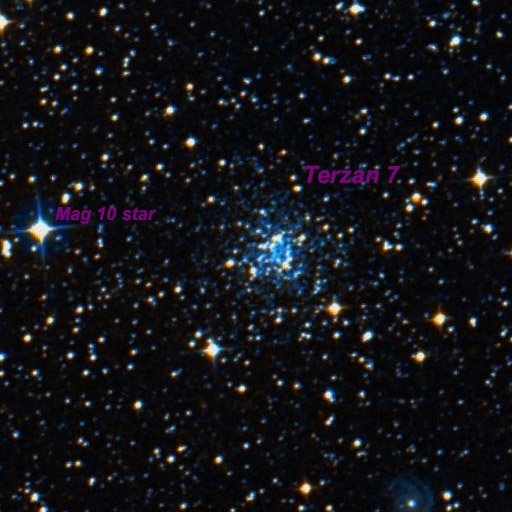
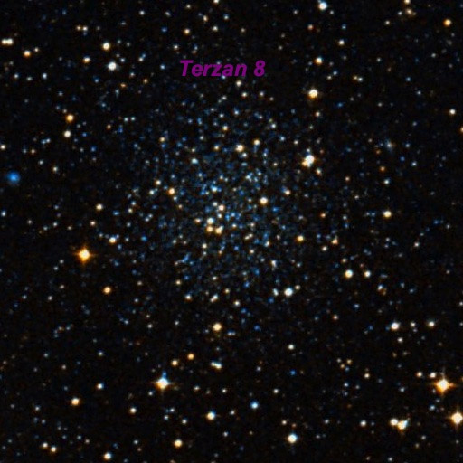
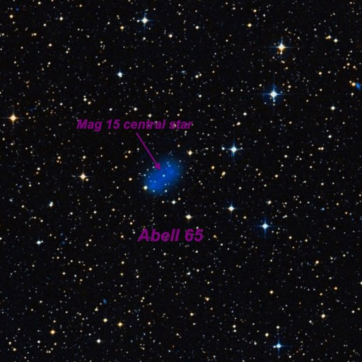
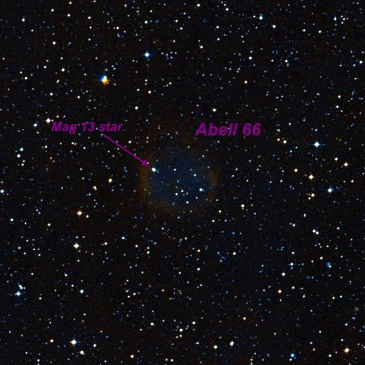
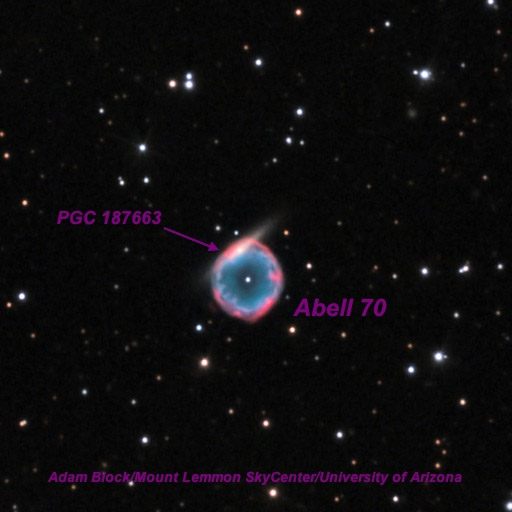
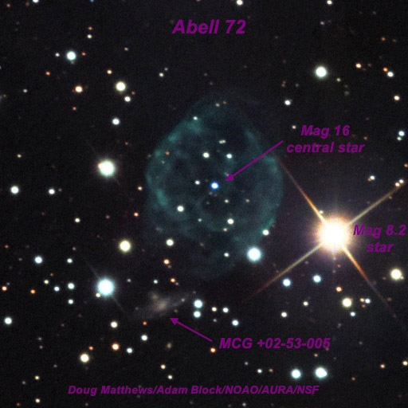
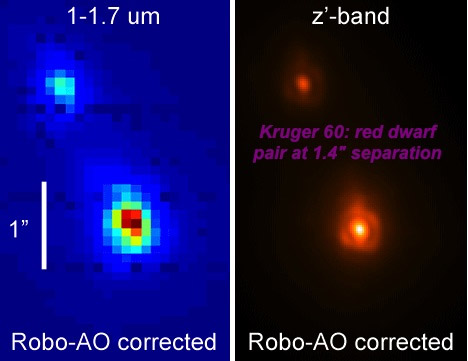

OR Lake Sonoma
OR 8/27/14: Lake Sonoma by Steve Gottlieb
Two days after new moon, I met Dennis Beckley at Lake Sonoma on Wednesday night last month (8/27/14). Unfortunately, there was no way to escape the commute traffic up 101 midweek, and as expected it was quite slow from Rohnert Park to Santa Rosa. Once I arrived at Lake Sonoma, Dennis was already there setting up, the sky was perfectly clear and soon a very thin crescent moon was just visible, very low in the west. We had a very pleasant, quiet evening -- it was fairly warm, no wind or clouds, good seeing and reasonably dark (no SQM readings). All in all, much better conditions than predicted on Clear Sky Clock. I was planning to mainly observe eye candy objects, but spent most of the time on more challenging fare, as I discovered I could go fairly deep this night with my 24-inch. Here's the rundown --

NGC 6679 appeared fairly faint to moderately bright, small, round, 18" diameter, fairly high surface brightness. A mag 14.5 star is attached at the southwest edge. MCG +11-22-056 = PGC 62026 lies just 0.6' N, and at 375x appeared extremely faint or very faint, round, just 8"-10" diameter. Once in my averted vision sweet spot, I could nearly hold this galaxy continuously. A mag 15 star (brighter than the galaxy) lies 0.3' NNE. NGC 6677 lies 1.7' SSE and appeared fairly faint, fairly small, elongated 5:2 WNW-ESE, very weak concentration, ~40"x16". A mag 14.5 star is barely off the SE end.

Immediately seen at 200x as a roundish, low surface brightness glow, ~1.5' diameter. Forms the northern vertex of a triangle with two mag 11.5/12.5 off the south side. At 260x, the surface brightness is clearly mottled and irregular and two or three superimposed stars twinkle in an out of view. At 375x, three mag 14.5-15 stars are clearly resolved in a shallow arc on the E, SE and SW sides of the halo. A couple of additional mag 15.5 stars are on the W and just N of center, for a total of a half-dozen resolved stars.

Picked up fairly easily at 260x as a faint or fairly faint, moderately large, round glow. A quasi-stellar nucleus stands out or perhaps a brighter superimposed star. At 375x, a mag 15-15.5 star is cleanly resolved on the east side of a very small core (less than 30"). Occasionally 1 or 2 fainter nearby stars in the core flicker in and out of view. The overall size was difficult to estimate, but perhaps extended 1.5'-2'.

At 125x with OIII filter, appeared moderately bright, fairly large, elongated 2:1 NW-SE, ~1.8'x0.9'. A mag 13 star is attached at the SE end and the planetary appears to extend in an irregular rectangular or oval shape to the NW. A mag 12.5 is off the NW side, 2' from the center of the PN. At 200x with NPB filter, the PN is slightly brighter at the SE end and fades out on the NW end. Averted vision increases the outer portion on the NW end. The mag 15 star central star was faint, but easily visible unfiltered at 200x and 375x.

Abell 66 was viewed at 125x with both OIII and NPB filters. It appeared very faint, very large, ~3' diameter, roundish, very low surface brightness, but usually has a fairly crisp, well-defined edge. A mag 13 star is superimposed at the ENE edge. Once in my averted vision "sweep spot", I could hold this huge Abell PN continuously with concentration. At 375x (unfiltered), the PN was not visible but a half dozen mag 15 and fainter stars are superimposed in the position of the SW side.

Abell 70 was viewed at 200x and 260x with and without a NPB filter as well as 280x and 375x unfiltered. At 260x unfiltered, Abell 70 is moderately bright, fairly small, irregularly round, 0.6' diameter, with a slightly darker center and brighter rim, giving a weak annular appearance. The galaxy PGC 187663 is an obvious brighter streak along the northern rim. Adding a NPB filter, the PN improves contrast and the galaxy is less evident (though still visible). At 375x, the galaxy dominates the view and appeared faint to fairly faint, small, very thin 3:1 or 7:2 WNW-ESE, 20"x6", very small bright core. Overall, the best view of both objects was unfiltered at 280x (8mm Ethos).

Excellent view at 125x and OIII filter. Easily visible as a moderately bright, well-defined 100" disc with a fairly crisp outline, centered 2' ENE of mag 8.2 SAO 106544 . A mag 12.3 star is barely off the SW edge and a mag 11.8 is beyond the east end. With careful viewing the rim appeared slightly brighter along portions of the rim, giving a weak annular appearance. At 375x, the mag 16 (or brighter) central star was easily visible. MCG +02-53-005 = PGC 65491, a very faint galaxy, lies just 1.9' SSE of the planetary and was barely visible as a 6" patch. Situated between two mag 11.3 and 14.5 stars 50" E and 33" W, respectively.

Kruger 60 is an unusual binary, consisting of a pair of red dwarfs. The period is only 44 years and the pair is currently near its minimum separation (1.4" in 2013-2014). It was cleanly split at 375x and the primary had an obvious orange-red color. The companion (60B) was too faint for color. Excellent view at 500x with the two pinpoint components widely separated. Kruger 60B, a flare star, is one of the least massive stars known, with a mass only 0.14 x (solar mass).